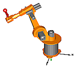

Examples of complete system models including 3-dimensional mechanics
This package contains complete system models where components from different domains are used, including 3-dimensional mechanics.
| Model | Description |
|---|---|
| RobotR3 RobotR3.OneAxis RobotR3.FullRobot |
6 degree of freedom robot with path planning,
controllers, motors, brakes, gears and mechanics.
"OneAxis" models only one drive train. "FullRobot" is
the complete, detailed robot model.  |
Extends from Modelica.Icons.ExamplesPackage (Icon for packages containing runnable examples).
| Name | Description |
|---|---|
| Library to demonstrate robot system models based on the Manutec r3 robot |